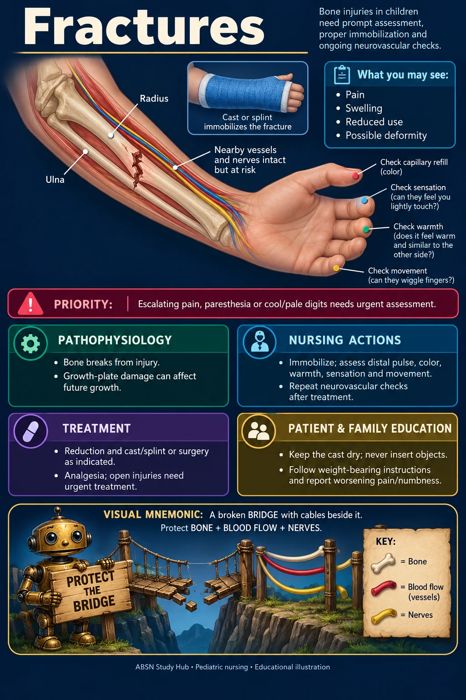

🦴 Musculoskeletal · NUR 235 · Module 10
Fractures
Pain, swelling, reduced use and possible deformity.


Study notes
🚨 Priority
Escalating pain, paresthesia or cool/pale digits needs urgent assessment.
⚙ Pathophysiology
- Bone breaks from injury; growth-plate damage can affect future growth.
🩺 Nursing actions
- Immobilize; assess distal pulse, color, warmth, sensation and movement.
- Repeat neurovascular checks after treatment.
💊 Treatment
- Reduction and cast/splint or surgery as indicated.
- Analgesia; open injuries need urgent treatment.
🏠 Patient & family education
- Keep the cast dry; never insert objects.
- Follow weight-bearing instructions and report worsening pain/numbness.
🗝 Visual mnemonic key
A broken BRIDGE with cables beside it: protect BONE + BLOOD FLOW + NERVES.
The cartoon objects are memory symbols. The labeled anatomy beside them is the medical illustration.
Where this fits in the course
Based on the supplied course maps and case-study topics. This concise visual companion adds original illustrations and memory aids; the original teaching files remain available.
Supplemental references for this system
Illustrations show typical features, not every possible presentation. Medication and procedure decisions follow the individual clinical plan. Original mnemonics are not affiliated with Picmonic.